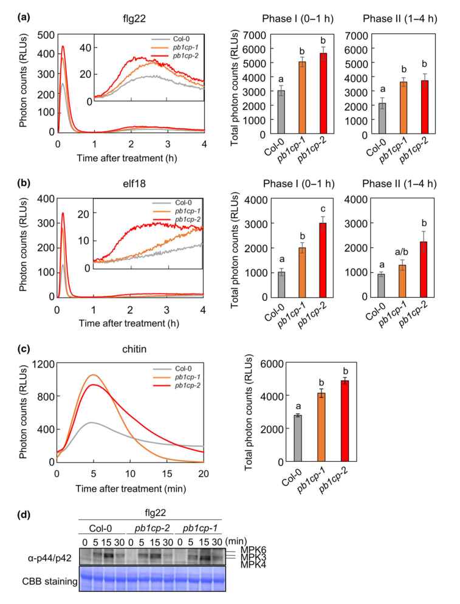

RBOHD (Respiratory burst oxidase homolog protein D; AtrbohD) is a plasma-membrane, calcium-dependent NADPH oxidase of the RBOH/NOX (gp91phox homolog) family. The 921-residue, six-transmembrane protein carries an N-terminal cytoplasmic regulatory region with two EF-hand calcium-binding motifs and a C-terminal cytoplasmic FAD- and NADPH-binding ferredoxin reductase-like module. It transfers electrons from cytosolic NADPH across the plasma membrane to molecular oxygen, producing apoplastic superoxide that rapidly dismutates to hydrogen peroxide. RBOHD is the principal source of the extracellular oxidative ("respiratory") burst in plant immunity. Upon perception of pathogen-associated molecular patterns by surface receptors such as FLS2, it is activated by a rise in cytosolic calcium (via its EF-hands) and by phosphorylation by receptor-like cytoplasmic kinases (notably BIK1) and other kinases (SIK1, calcium-dependent protein kinases), while being held in check by negative regulators such as the kinase PBL13. The reactive oxygen species it produces act in PAMP-triggered immunity, in the regulation and spatial restriction of hypersensitive cell death, in long-distance ROS-wave systemic signaling, and in abscisic acid- and calcium-dependent stomatal closure. RBOHD also contributes ROS to abiotic stress responses including wounding, heat, UV-B, osmotic/cell-wall-integrity signaling, and low-oxygen stress. It is most abundant in roots and is expressed in mesophyll and guard cells.
| GO Term | Evidence | Action | Reason |
|---|---|---|---|
|
GO:0004601
peroxidase activity
|
IEA
GO_REF:0000002 |
REMOVE |
Summary: RBOHD is a superoxide-generating NADPH oxidase, not a peroxidase. This IEA derives from the gp91phox/cytochrome-b245 (Cyt_b245) InterPro signature (IPR013623) and the associated UniProt "Peroxidase" keyword, which is misleading for RBOH proteins. The enzyme reduces O2 to superoxide using electrons from NADPH; it does not reduce hydrogen peroxide.
Reason: The catalytic activity of RBOHD is electron transfer from NADPH to O2 to generate superoxide (and downstream H2O2 by dismutation), not peroxidase activity. The InterPro-derived peroxidase keyword is a known mis-mapping for the gp91phox family and over-annotates the gene. The informative catalytic term is GO:0016175 (added as NEW).
Supporting Evidence:
PMID:11756663
our demonstration that an NADPH oxidase subunit is required for ROI production confirms Doke's original suggestion that O is the first ROI produced
|
|
GO:0005509
calcium ion binding
|
IEA
GO_REF:0000002 |
ACCEPT |
Summary: RBOHD contains two canonical N-terminal EF-hand calcium-binding domains (UniProt residues 253-288 and 297-332, with Ca2+ coordinated by residues 266/268/270/272/277) and is a calcium-dependent NADPH oxidase. Calcium binding to these EF-hands is integral to its activation.
Reason: Well supported by conserved EF-hand domains/Ca2+ binding sites in UniProt and by the calcium-dependence of RBOH oxidase activity. This is a core molecular function contributing to activity regulation.
Supporting Evidence:
PMID:24629339
Here we show that the receptor-like cytoplasmic kinase BIK1, a component of the FLS2 immune receptor complex, not only positively regulates flg22-triggered calcium influx but also directly phosphorylates the NADPH oxidase RbohD at specific sites in a calcium-independent manner to enhance ROS generation.
file:ARATH/RBOHD/RBOHD-deep-research-falcon.md
RBOHD is activated by direct Ca2+ binding to EF-hands and by phosphorylation
|
|
GO:0006952
defense response
|
IEA
GO_REF:0000117 |
ACCEPT |
Summary: RBOHD generates the apoplastic ROS burst central to plant immune responses; rbohD mutants fail to accumulate ROS during pathogen defense. This electronic annotation is consistent with strong experimental evidence (see also the IMP defense response annotation below).
Reason: Defense response is a well-established core biological process for RBOHD, supported by mutant phenotypes during pathogen interactions.
Supporting Evidence:
PMID:11756663
AtrbohD and AtrbohF are required for accumulation of reactive oxygen intermediates in the plant defense response
file:ARATH/RBOHD/RBOHD-deep-research-falcon.md
major NADPH oxidase responsible for pathogen-triggered ROS
|
|
GO:0016020
membrane
|
IEA
GO_REF:0000120 |
ACCEPT |
Summary: RBOHD is a multi-pass (six transmembrane helix) integral membrane protein, specifically of the plasma membrane. This generic membrane term is correct but less informative than the plasma membrane annotation.
Reason: True location but generic; the more specific plasma membrane annotation (GO:0005886) captures the functional compartment. Retained as accurate but non-core relative to plasma membrane.
Supporting Evidence:
PMID:24629339
directly phosphorylates the NADPH oxidase RbohD
|
|
GO:0016491
oxidoreductase activity
|
IEA
GO_REF:0000002 |
ACCEPT |
Summary: RBOHD is an oxidoreductase that transfers electrons from NADPH to O2. This is a very general parent of the specific superoxide-generating NADPH oxidase activity.
Reason: Correct but high-level; acceptable as a broad IEA parent of the informative term GO:0016175. Not the core descriptor on its own.
Supporting Evidence:
PMID:11756663
AtrbohD and AtrbohF, encoding probable components of a plant NADPH oxidase
file:ARATH/RBOHD/RBOHD-deep-research-falcon.md
catalyzes **electron transfer from cytosolic NADPH to molecular oxygen (O2)** to generate **superoxide (O2•−)** in the **apoplast**, which can subsequently form **H2O2**
|
|
GO:0050664
oxidoreductase activity, acting on NAD(P)H, oxygen as acceptor
|
IEA
GO_REF:0000002 |
ACCEPT |
Summary: This term correctly describes RBOHD as an NAD(P)H-dependent oxidoreductase using oxygen as electron acceptor, which is precisely the RBOH oxidase chemistry. It is the immediate parent of the superoxide-generating term GO:0016175.
Reason: Accurate and reasonably specific; consistent with the NADPH-binding ferredoxin-reductase module and O2-reducing oxidase activity. The product-specific child term GO:0016175 is added as NEW.
Supporting Evidence:
PMID:11756663
an NADPH oxidase subunit is required for ROI production
file:ARATH/RBOHD/RBOHD-deep-research-falcon.md
a catalytic C-terminal core with FAD- and NADPH-binding domains
|
|
GO:0098869
cellular oxidant detoxification
|
IEA
GO_REF:0000108 |
REMOVE |
Summary: This term is inferred logically from the spurious peroxidase MF (GO:0004601 to GO:0098869). RBOHD generates reactive oxygen species for signaling; it does not detoxify cellular oxidants. The annotation is essentially backwards with respect to the protein's biology.
Reason: RBOHD is a ROS-producing enzyme, not an antioxidant/detoxifying enzyme. The inference depends on the incorrect peroxidase activity assignment, which is itself being removed.
Supporting Evidence:
PMID:19726575
Functional RBOHD causes marked extracellular hydrogen peroxide accumulation
|
|
GO:0005794
Golgi apparatus
|
HDA
PMID:22430844 Isolation and proteomic characterization of the Arabidopsis ... |
MARK AS OVER ANNOTATED |
Summary: A Golgi assignment from high-throughput organellar proteomics. For a multi-pass plasma-membrane oxidase, a Golgi signal most plausibly reflects transit through the secretory pathway or co-fractionation rather than a functional Golgi pool. The functional location is the plasma membrane.
Reason: High-throughput proteomic localization without functional support; inconsistent with the established plasma-membrane site of RBOHD action. Likely reflects biosynthetic trafficking or proteomic co-fractionation.
Supporting Evidence:
PMID:22430844
Isolation and proteomic characterization of the Arabidopsis Golgi
|
|
GO:0005886
plasma membrane
|
HDA
PMID:22923678 Putative glycosyltransferases and other plant Golgi apparatu... |
ACCEPT |
Summary: The plasma membrane is the functional location of RBOHD. It is a multi-pass plasma-membrane NADPH oxidase that releases superoxide into the apoplast, where it acts together with plasma-membrane receptor complexes (FLS2/BIK1) in immune signaling.
Reason: Strongly supported by proteomics and by the abundant literature placing RBOHD in plasma-membrane PRR complexes; this is the core cellular location for its function.
Supporting Evidence:
PMID:24629339
BIK1, a component of the FLS2 immune receptor complex
PMID:22923678
plant Golgi apparatus proteins are revealed by LOPIT proteomics
file:ARATH/RBOHD/RBOHD-deep-research-falcon.md
RBOHD is a plasma membrane-localized NADPH oxidase that produces ROS into the apoplast
|
|
GO:0071456
cellular response to hypoxia
|
HEP
PMID:31519798 Integrative Analysis from the Epigenome to Translatome Uncov... |
KEEP AS NON CORE |
Summary: RBOHD expression/regulation is captured in an integrative epigenome-to-translatome study of transient stress that includes hypoxia. Consistent with a role for RBOH-derived ROS in low-oxygen responses (cf. HRU1/ROP2/RbohD module under anoxia), this peripheral, expression-pattern based annotation is plausible but not a core function.
Reason: Expression-pattern (HEP) evidence from a high-throughput stress study; supports involvement in hypoxia responses but as a peripheral process rather than a defining function. Concordant with independent anoxia evidence (PMID:27251529).
Supporting Evidence:
PMID:27251529
HRU1 interacts with proteins that induce ROS production, the GTPase ROP2 and the NADPH oxidase RbohD, pointing to the existence of a low-oxygen-specific mechanism for the modulation of ROS levels
|
|
GO:0009536
plastid
|
HDA
PMID:28887381 Global Analysis of Membrane-associated Protein Oligomerizati... |
REMOVE |
Summary: A plastid assignment from a global membrane-protein correlation-profiling study. RBOHD is a plasma-membrane oxidase; a plastid location is not supported by any functional study and most likely reflects co-fractionation/contamination in the high-throughput dataset.
Reason: No functional or targeted experimental support for a plastid pool of RBOHD; inconsistent with its plasma-membrane topology and apoplastic ROS output. Likely a proteomic artifact.
Supporting Evidence:
PMID:28887381
Global Analysis of Membrane-associated Protein Oligomerization Using Protein Correlation Profiling
|
|
GO:0005634
nucleus
|
ISM
GO_REF:0000122 |
REMOVE |
Summary: A purely computational subcellular-localization prediction (AtSubP). A six-transmembrane plasma-membrane oxidase is not expected to localize to the nucleus, and no experimental evidence supports a nuclear RBOHD.
Reason: Sequence-based prediction (ISM) contradicted by the membrane topology and experimentally established plasma-membrane localization. No supporting functional evidence.
Supporting Evidence:
PMID:22923678
plant Golgi apparatus proteins are revealed by LOPIT proteomics
|
|
GO:0005515
protein binding
|
IPI
PMID:28696275 A Lectin Receptor-Like Kinase Mediates Pattern-Triggered Sal... |
MARK AS OVER ANNOTATED |
Summary: Refers to functional interaction within pattern-triggered immunity signaling; the lectin receptor-like kinase LecRK-IX.2 induces RBOHD phosphorylation (likely via calcium-dependent protein kinases) to trigger ROS. "Protein binding" is uninformative about RBOHD's actual molecular function.
Reason: Generic protein binding conveys no specific functional information. The biologically meaningful content (regulation of RBOHD ROS output by upstream immune kinases) is captured in the core_functions and process annotations rather than by GO:0005515.
Supporting Evidence:
PMID:28696275
LecRK-IX.2 is capable of inducing RbohD phosphorylation, likely by recruiting calcium-dependent protein kinases to trigger ROS production in Arabidopsis
|
|
GO:0005515
protein binding
|
IPI
PMID:24629339 The FLS2-associated kinase BIK1 directly phosphorylates the ... |
MARK AS OVER ANNOTATED |
Summary: This IPI records the interaction of RBOHD with BIK1 and FLS2. BIK1 directly phosphorylates RBOHD to enhance ROS during immunity. While biologically important, the bare "protein binding" term is uninformative.
Reason: The interaction with BIK1/FLS2 is a key activation mechanism, but GO:0005515 does not capture it usefully. The functional relationship (kinase-mediated activation of RBOHD) is documented in notes and core_functions; a specific kinase-binding term would be preferable but is not added here to avoid over-fitting.
Supporting Evidence:
PMID:24629339
the receptor-like cytoplasmic kinase BIK1, a component of the FLS2 immune receptor complex ... directly phosphorylates the NADPH oxidase RbohD at specific sites
file:ARATH/RBOHD/RBOHD-deep-research-falcon.md
In PTI, PRRs such as FLS2/EFR activate downstream cytoplasmic kinases (e.g., BIK1) that phosphorylate RBOHD to drive a rapid ROS burst
|
|
GO:0005515
protein binding
|
IPI
PMID:26432875 PBL13 Is a Serine/Threonine Protein Kinase That Negatively R... |
MARK AS OVER ANNOTATED |
Summary: Records the interaction of RBOHD with the negative-regulatory kinase PBL13 (split-luciferase complementation), which is disrupted by flagellin treatment. Informative biologically but not captured by the generic term.
Reason: Generic protein binding is uninformative. The PBL13 interaction is a negative-regulatory mechanism for RBOHD ROS production, documented in notes; GO:0005515 itself should not be treated as a core molecular function.
Supporting Evidence:
PMID:26432875
PBL13 is able to associate with the nicotinamide adenine dinucleotide phosphate, reduced oxidase RESPIRATORY BURST OXIDASE HOMOLOG PROTEIN D (RBOHD) by split-luciferase complementation assay, and this association is disrupted by flagellin treatment
|
|
GO:0005515
protein binding
|
IPI
PMID:27251529 Universal stress protein HRU1 mediates ROS homeostasis under... |
MARK AS OVER ANNOTATED |
Summary: Records interaction of RBOHD with the universal stress protein HRU1 (and ROP2) in modulating ROS production under anoxia. Biologically meaningful but uninformative as a bare protein-binding term.
Reason: Generic protein binding lacks specificity. The HRU1/ROP2 interaction links oxygen sensing to RBOHD ROS output under low oxygen; documented in notes rather than via GO:0005515.
Supporting Evidence:
PMID:27251529
HRU1 interacts with proteins that induce ROS production, the GTPase ROP2 and the NADPH oxidase RbohD
|
|
GO:0072593
reactive oxygen species metabolic process
|
IGI
PMID:26704641 Arabidopsis HY1-Modulated Stomatal Movement: An Integrative ... |
ACCEPT |
Summary: RBOHD-derived ROS are required for ABA/HY1-ABI4-dependent stomatal closure; genetic interaction places RBOHD upstream of the ROS levels that mediate stomatal movement. Consistent with RBOHD as a primary ROS generator.
Reason: Well supported; RBOHD is a major contributor to cellular ROS metabolism, here in the context of ABA-dependent stomatal regulation.
Supporting Evidence:
PMID:26704641
the promotion of ABA-triggered up-regulation of RbohD abundance and reactive oxygen species (ROS) levels in the hy1 mutant was almost fully blocked by the mutation of ABI4
|
|
GO:0007231
osmosensory signaling pathway
|
IMP
PMID:22422940 Osmosensitive changes of carbohydrate metabolism in response... |
KEEP AS NON CORE |
Summary: In cellulose-biosynthesis-inhibition experiments, rbohDF mutants fail to show the osmosensitive metabolic changes, implicating RBOHD/F-derived ROS in osmo/cell-wall-integrity signaling.
Reason: Supported by mutant phenotype, but this is a specialized, peripheral signaling context relative to RBOHD's central immune/ROS-burst role. Retained as a genuine but non-core process.
Supporting Evidence:
PMID:22422940
osmotic support does not suppress CBI-induced metabolic changes in seedlings impaired in ... reactive oxygen species production (respiratory burst oxidase homolog DF [rbohDF])
|
|
GO:0033500
carbohydrate homeostasis
|
IMP
PMID:22422940 Osmosensitive changes of carbohydrate metabolism in response... |
KEEP AS NON CORE |
Summary: The same study links RBOHD/F-derived ROS to osmosensitive control of carbohydrate metabolism after cellulose biosynthesis inhibition. The effect on carbohydrate homeostasis is indirect and downstream of the osmo-signaling role.
Reason: Indirect, context-specific phenotype; ROS from RBOHD feed into an osmosensitive regulatory circuit that affects carbohydrate metabolism, but this is peripheral to the protein's core ROS-generating immune function.
Supporting Evidence:
PMID:22422940
carbohydrate metabolism is responsive to changes in cellulose biosynthesis activity and turgor pressure
|
|
GO:0009611
response to wounding
|
IEP
PMID:21419340 Calmodulin-dependent activation of MAP kinase for ROS homeos... |
KEEP AS NON CORE |
Summary: The Ca2+/CaM-MPK8-MKK3 wound-signaling pathway negatively regulates ROS accumulation through control of RbohD expression, linking RBOHD to wound-induced ROS homeostasis.
Reason: RBOHD participates in wound-induced ROS homeostasis (as a regulated ROS source), but the evidence is expression-pattern based (IEP) and the process is peripheral to its central immune ROS-burst function.
Supporting Evidence:
PMID:21419340
The MPK8 pathway negatively regulates ROS accumulation through controlling expression of the Rboh D gene
|
|
GO:0072593
reactive oxygen species metabolic process
|
IMP
PMID:11756663 Arabidopsis gp91phox homologues AtrbohD and AtrbohF are requ... |
ACCEPT |
Summary: rbohD insertion mutants eliminate the majority of pathogen-induced ROS, demonstrating that RBOHD is the principal generator of the defense oxidative burst. This is a core process annotation.
Reason: Strong genetic evidence that RBOHD drives ROS metabolic process (the extracellular oxidative burst) during defense; a defining function.
Supporting Evidence:
PMID:11756663
The AtrbohD gene is required for most of the ROI observed after inoculation with avirulent Pst
|
|
GO:0072593
reactive oxygen species metabolic process
|
TAS
PMID:15705948 Different signaling and cell death roles of heterotrimeric G... |
ACCEPT |
Summary: RBOHD is part of the Arabidopsis ROS gene network and contributes ROS in the oxidative stress response (including ozone/G-protein-mediated responses). Consistent with its established role in ROS production.
Reason: TAS annotation consistent with the well-documented role of RBOHD as a generator of signaling ROS; duplicate aspect of the core ROS metabolic process annotation.
Supporting Evidence:
PMID:11756663
extracellular ROI production in Arabidopsis requires Atrboh function
|
|
GO:0043069
negative regulation of programmed cell death
|
IGI
PMID:16170317 Pathogen-induced, NADPH oxidase-derived reactive oxygen inte... |
ACCEPT |
Summary: RBOHD-derived ROS suppress the spread of hypersensitive cell death into cells surrounding infection sites, antagonizing salicylic acid-dependent pro-death signals. Thus RBOHD limits cell-death spread even though its ROS can also trigger localized death.
Reason: Supported by genetic evidence; an established (if context-dependent) role of RBOHD in restricting programmed cell death spread during the immune response.
Supporting Evidence:
PMID:16170317
the subsequent oxidative burst can suppress cell death in cells surrounding sites of NADPH oxidase activation
PMID:19726575
functional RBOHD triggers death in cells that are damaged by fungal infection but simultaneously inhibits death in neighboring cells
|
|
GO:0016174
NAD(P)H oxidase H2O2-forming activity
|
IMP
PMID:19726575 Dual roles of reactive oxygen species and NADPH oxidase RBOH... |
MODIFY |
Summary: RBOHD is a NADPH oxidase whose immediate enzymatic product is superoxide; the measured apoplastic H2O2 arises by (spontaneous or SOD-catalyzed) dismutation of that superoxide. The more accurate catalytic term is GO:0016175 "superoxide-generating NAD(P)H oxidase activity". The H2O2-forming term reflects the downstream detected species rather than the primary reaction.
Reason: The proximal product is superoxide (PMID:11756663), so the product-specific MF should be the superoxide-generating activity. H2O2 is formed secondarily by dismutation, making GO:0016174 a less accurate descriptor of the catalyzed reaction.
Proposed replacements:
superoxide-generating NAD(P)H oxidase activity
Supporting Evidence:
PMID:11756663
O is the first ROI produced
PMID:19726575
Functional RBOHD causes marked extracellular hydrogen peroxide accumulation
|
|
GO:0050832
defense response to fungus
|
IMP
PMID:19726575 Dual roles of reactive oxygen species and NADPH oxidase RBOH... |
ACCEPT |
Summary: rbohD knockout alters ROS accumulation and cell-death patterns upon infection with the necrotrophic fungus Alternaria brassicicola, demonstrating involvement in antifungal defense (with dual, position- dependent effects on cell death).
Reason: Supported by mutant phenotype in a defined fungal pathosystem; a genuine, if context-dependent, defense-against-fungus role for RBOHD.
Supporting Evidence:
PMID:19726575
a rbohD knockout mutant exhibits increased spread of cell death at the macroscopic level upon inoculation with the fungus Alternaria brassicicola
|
|
GO:0009408
response to heat
|
IMP
PMID:15923322 Heat stress phenotypes of Arabidopsis mutants implicate mult... |
KEEP AS NON CORE |
Summary: atrbohD mutants show (weaker) defects in acquired thermotolerance, implicating RBOHD-derived ROS/oxidative-burst signaling in the heat-stress response among multiple contributing pathways.
Reason: Supported by mutant phenotype but the effect is relatively weak and this abiotic-stress role is peripheral to RBOHD's central function in the immune ROS burst.
Supporting Evidence:
PMID:15923322
Mutations in nicotinamide adenine dinucleotide phosphate oxidase homolog genes (atrbohB and D) ... showed weaker defects
|
|
GO:0016174
NAD(P)H oxidase H2O2-forming activity
|
TAS
PMID:15608336 Cytosolic ascorbate peroxidase 1 is a central component of t... |
MODIFY |
Summary: As above, RBOHD is an NADPH oxidase; its primary product is superoxide, with H2O2 produced by dismutation. The superoxide-generating activity term (GO:0016175) is the more accurate molecular function.
Reason: Same rationale as the IMP-supported GO:0016174 annotation; the proximal reaction generates superoxide. Replace with the superoxide-generating NAD(P)H oxidase activity term.
Proposed replacements:
superoxide-generating NAD(P)H oxidase activity
Supporting Evidence:
PMID:11756663
O is the first ROI produced
|
|
GO:0006952
defense response
|
IMP
PMID:11756663 Arabidopsis gp91phox homologues AtrbohD and AtrbohF are requ... |
ACCEPT |
Summary: Loss of RBOHD eliminates most pathogen-induced ROS during incompatible (avirulent) interactions, establishing RBOHD as essential for the defense oxidative burst. This is a core biological process.
Reason: Strong genetic (IMP) support; defense response via the ROS burst is the central biological role of RBOHD.
Supporting Evidence:
PMID:11756663
AtrbohD and AtrbohF are required for accumulation of reactive oxygen intermediates in the plant defense response
|
|
GO:0002679
respiratory burst involved in defense response
|
IMP
PMID:11756663 Arabidopsis gp91phox homologues AtrbohD and AtrbohF are requ... |
NEW |
Summary: RBOHD is the principal enzyme producing the apoplastic oxidative ("respiratory") burst that accompanies plant immune responses; rbohD mutants lose most pathogen-induced extracellular ROS. This specific term captures the defining immune process better than the generic ROS metabolic process / defense response terms.
Reason: A more precise BP term (verified in GO as GO:0002679) directly describing the RBOHD-generated immune oxidative burst, supported by mutant genetics and by the activation of RBOHD within the FLS2/BIK1 PRR complex.
Supporting Evidence:
PMID:11756663
extracellular ROI production in Arabidopsis requires Atrboh function
PMID:24629339
directly phosphorylates the NADPH oxidase RbohD at specific sites in a calcium-independent manner to enhance ROS generation
file:ARATH/RBOHD/RBOHD-deep-research-falcon.md
major NADPH oxidase responsible for pathogen-triggered ROS
|
|
GO:0016175
superoxide-generating NAD(P)H oxidase activity
|
IDA
PMID:11756663 Arabidopsis gp91phox homologues AtrbohD and AtrbohF are requ... |
NEW |
Summary: RBOHD is a gp91phox-homologous NADPH oxidase that transfers electrons from cytosolic NADPH across the plasma membrane to O2, producing superoxide as the proximal product (subsequently dismutated to H2O2). This is the informative, product-specific catalytic molecular function and the core activity of the protein.
Reason: Captures the accurate catalytic activity of RBOHD (superoxide generation), replacing the less accurate H2O2-forming term and the spurious peroxidase term. Verified GO ID via OLS.
Supporting Evidence:
PMID:11756663
an NADPH oxidase subunit is required for ROI production confirms Doke's original suggestion that O is the first ROI produced
file:ARATH/RBOHD/RBOHD-deep-research-falcon.md
catalyzes **electron transfer from cytosolic NADPH to molecular oxygen (O2)** to generate **superoxide (O2•−)** in the **apoplast**, which can subsequently form **H2O2**
|
Q: Which kinase (BIK1, SIK1, CPKs, LecRK-IX.2) phosphorylation events are necessary versus sufficient for RBOHD activation in vivo, and how do they integrate with EF-hand calcium binding?
Q: To what extent is RBOHD a hub for the systemic ROS wave, and what determines cell-to-cell propagation of its activation across tissues?
Q: How do the recently described negative-regulatory and turnover mechanisms (PB1CP-mediated BIK1 displacement and endocytosis, PBL13/PIRE-mediated ubiquitination/vacuolar degradation, and CBE1-mediated translational repression of RBOHD accumulation) quantitatively shape the amplitude and transience of the immune ROS burst?
The research report should be a detailed narrative explaining the function, biological processes, and localization of the gene product. Citations should be given for all claims.
You should prioritize authoritative reviews and primary scientific literature when conducting research. You can supplement
this with annotations you find in gene/protein databases, but these can be outdated or inaccurate.
We are specifically interested in the primary function of the gene - for enzymes, what reaction is catalyzed, and what is the substrate specificity? For transporters, what is the substrate? For structural proteins or adapters, what is the broader structural role? For signaling molecules, what is the role in the pathway.
We are interested in where in or outside the cell the gene product carries out its function.
We are also interested in the signaling or biochemical pathways in which the gene functions. We are less interested in broad pleiotropic effects, except where these elucidate the precise role.
Include evidence where possible. We are interested in both experimental evidence as well as inference from structure, evolution, or bioinformatic analysis. Precise studies should be prioritized over high-throughput, where available.
The target protein is Arabidopsis thaliana Respiratory burst oxidase homolog protein D (RBOHD; AtRBOHD), a member of the plant RBOH/NOX family of plasma-membrane NADPH oxidases that generate apoplastic reactive oxygen species (ROS). Multiple sources converge on the defining features expected from the UniProt entry: an N‑terminal regulatory region with EF‑hand Ca2+‑binding motifs, a C‑terminal catalytic core with FAD- and NADPH-binding regions, and a multi-pass membrane region with heme cofactors enabling electron transport across the membrane to reduce O2 to superoxide. (hasan2019theroleof pages 24-27, krainiukova2025regulationofplant pages 7-10, hu2020nadphoxidasesthe pages 3-5, zhang2023evolutionaryanalysisof pages 1-2, torres2024unveilingwhatmakes pages 2-2)
RBOHD is a plant NADPH oxidase (also called an RBOH) that catalyzes electron transfer from cytosolic NADPH to molecular oxygen (O2) to generate superoxide (O2•−) in the apoplast, which can subsequently form H2O2 (spontaneously or via superoxide dismutase). (hasan2019theroleof pages 24-27, zhang2023evolutionaryanalysisof pages 1-2, torres2024unveilingwhatmakes pages 2-2)
RBOHD matches the canonical plant RBOH domain logic:
- N‑terminal cytosolic region with two EF‑hand Ca2+‑binding motifs and multiple regulatory phosphorylation sites; Ca2+ can directly stimulate activity via EF‑hands. (hasan2019theroleof pages 24-27, krainiukova2025regulationofplant pages 7-10, torres2024unveilingwhatmakes pages 2-2)
- C‑terminal cytosolic catalytic region containing FAD- and NADPH-binding domains, supporting electron flow from NADPH → FAD → hemes. (hasan2019theroleof pages 24-27, krainiukova2025regulationofplant pages 7-10, hu2020nadphoxidasesthe pages 3-5)
- Six transmembrane helices with two heme groups, with conserved histidines acting as axial ligands—consistent with intramembrane electron transfer. (hasan2019theroleof pages 24-27, krainiukova2025regulationofplant pages 7-10, zhang2023evolutionaryanalysisof pages 1-2)
These structural concepts explain how RBOHD can produce extracellular ROS while drawing reducing equivalents from the cytosolic NADPH pool. (krainiukova2025regulationofplant pages 7-10, zhang2023evolutionaryanalysisof pages 1-2)
A PAMP-triggered ROS burst is a rapid, transient increase in apoplastic ROS (often measured by luminol-based chemiluminescence) following recognition of pathogen-associated molecular patterns (PAMPs) by pattern recognition receptors (PRRs). Expert synthesis identifies RBOHD as the major NADPH oxidase responsible for pathogen-triggered ROS in Arabidopsis and highlights that its activity must be transient and tightly controlled to avoid damage. (torres2024unveilingwhatmakes pages 2-2)
RBOHD can be activated directly by Ca2+ binding to its EF-hand motifs, and indirectly via Ca2+-dependent protein kinases (CPKs/CDPKs) that phosphorylate regulatory regions. (torres2024unveilingwhatmakes pages 2-2, krainiukova2025regulationofplant pages 7-10)
A compilation source with residue mapping lists multiple phosphorylation sites on Arabidopsis RBOHD and associated kinases:
- DORN1 → S22, T24 (krainiukova2025regulationofplant pages 14-18)
- BIK1 → S39, S343, S347 (activation) (krainiukova2025regulationofplant pages 14-18)
- RIPK → S343, S347 (krainiukova2025regulationofplant pages 14-18)
- MAP4Ks → S347 (krainiukova2025regulationofplant pages 14-18)
- CPK16 → S133, S148, S163, S347 (krainiukova2025regulationofplant pages 14-18)
- ALR1 → S39 (krainiukova2025regulationofplant pages 14-18)
- LKS4 → S39 on AtRBOHC/D/F (krainiukova2025regulationofplant pages 14-18)
Conserved/featured sites include S133, S163, S343, S347, T912 (with S39 moderately conserved and S148 weakly conserved in this summary). (krainiukova2025regulationofplant pages 14-18)
Expert commentary also highlights layered kinase control in immunity: BIK1/RIPK phosphorylation of N‑terminal residues and CRK2 phosphorylation of C‑terminal residues, with SIK1 acting directly or through BIK1. (torres2024unveilingwhatmakes pages 2-2)
Tight downregulation is a core principle: excessive ROS is detrimental, so plants employ both post-translational and post-transcriptional controls. (torres2024unveilingwhatmakes pages 2-2)
A 2024 primary study (New Phytologist) identifies PB1CP as a negative regulator of RBOHD:
- PB1CP was identified by co-immunoprecipitation + mass spectrometry as an RBOHD-associated factor. (goto2024thephagocytosisoxidasebem1p pages 1-2)
- PB1CP competes with BIK1 for binding to RBOHD in vitro; after PAMP treatment, PB1CP–RBOHD interaction increases and promotes dissociation of phosphorylated BIK1 from RBOHD in vivo. (goto2024thephagocytosisoxidasebem1p pages 1-2)
- PB1CP and RBOHD co-localize at the cell periphery and relocalize to small endomembrane compartments upon PAMP stimulation, consistent with a role in endocytosis. (goto2024thephagocytosisoxidasebem1p pages 1-2)
- PB1CP overexpression reduces RBOHD protein abundance, consistent with promoting removal/turnover. (goto2024thephagocytosisoxidasebem1p pages 1-2)
In a complementary expert synthesis focused on why the ROS burst is transient, additional deactivation layers are emphasized:
- PBL13 phosphorylates the RBOHD C‑terminus in the resting state and this promotes PIRE-mediated ubiquitination and vacuolar degradation.
- C‑terminal nitrosylation is described as a deactivation mechanism.
- PB1CP is framed as part of the endocytic/vacuolar downregulation pathway. (torres2024unveilingwhatmakes pages 2-2)
A 2023 Journal of Biological Chemistry study reports that CBE1 (MOB7; AT4G01290), an eIF4E1-binding protein associated with the 5′ mRNA cap and translation initiation machinery, negatively regulates accumulation of RBOHD protein. Loss/knockdown of CBE1 and related decapping/translation regulators leads to increased RBOHD abundance, elevated elicitor-induced apoplastic ROS, and enhanced antibacterial immunity—supporting a model in which RBOHD output is controlled at the level of translation/decapping-associated ribonucleoprotein regulation rather than only transcription. (george2023arabidopsistranslationinitiation pages 1-2)
In PTI, PRRs such as FLS2/EFR activate downstream cytoplasmic kinases (e.g., BIK1) that phosphorylate RBOHD to drive a rapid ROS burst. (goto2024theleucinerichrepeat pages 1-2)
A 2024 Plant Cell paper places RBOHD in a PRR-associated complex context by identifying QSK1, an LRR receptor kinase, as a PRR–RBOHD complex-associated negative regulator that downregulates PRR abundance (FLS2 and EFR), thereby dampening PTI; the bacterial effector HopF2Pto exploits QSK1 to suppress immunity. (goto2024theleucinerichrepeat pages 1-2)
RBOHD (with RBOHF) is described as a pivotal ROS source for guard cell ABA signaling, supporting ABA-induced stomatal closure. (shen2020persulfidationbasedmodificationof pages 1-4)
In guard cells, redox post-translational modifications provide a mechanistic integration point: persulfidation of RBOHD at Cys825 and Cys890 enhances ROS production and is physiologically relevant to ABA-induced stomatal closure; the same Cys890 is also discussed as a site where S-nitrosylation can suppress ROS during defense. (shen2020persulfidationbasedmodificationof pages 1-4)
A regulation-focused synthesis lists RBOHD involvement in diverse processes including wound-induced responses, damage-induced lignification, biotic and abiotic stress responses, and ABA-/JA-mediated stomatal closure (among others), consistent with its role as a major ROS-producing hub at the plasma membrane. (krainiukova2025regulationofplant pages 10-14)
A stress integration perspective similarly describes RBOHD as a major isoform active in both abiotic and biotic stress, producing apoplastic superoxide/H2O2 that can re-enter cells via aquaporins and function as a signal integrator across stress inputs. (kumar2025principlesofsignal pages 3-4)
The identification of CBE1 as a negative regulator of RBOHD protein accumulation adds a distinct “supply-side” mechanism controlling the amplitude of ROS bursts and immunity outcomes by modulating how much oxidase is available at baseline and/or after elicitation. (george2023arabidopsistranslationinitiation pages 1-2)
Because RBOHD is a central hub for receptor-proximal ROS signaling across immunity and stress acclimation, it is widely discussed as a potential node for engineering stress resilience (e.g., tuning ROS amplitude/duration to improve disease resistance or abiotic stress tolerance), but with a key caveat: inappropriate ROS elevation can be detrimental, so strategies increasingly focus on regulatory modules (kinases/phosphatases, endocytosis/turnover factors, translation control) rather than constitutively increasing oxidase activity. This “tight-control” principle is explicitly emphasized in expert commentary regarding the need to avoid detrimental effects of ROS while enabling defense signaling. (torres2024unveilingwhatmakes pages 2-2, krainiukova2025regulationofplant pages 10-14)
Direct numeric effect sizes (e.g., fold-changes, kinetics parameters, pathogen growth values) were not present in the accessible text snippets. However, quantitative experimental outputs are available as figure evidence from the 2024 PB1CP paper:
- Luminol-based ROS burst assays show that pb1cp mutants display enhanced ROS bursts (triggered by flg22/elf18/chitin) whereas PB1CP overexpression reduces ROS bursts. (goto2024thephagocytosisoxidasebem1p media a584d7aa, goto2024thephagocytosisoxidasebem1p media 2bfdfcb1)
- An immunoblot shows reduced RBOHD protein abundance in PB1CP overexpression lines (basal and flg22-induced). (goto2024thephagocytosisoxidasebem1p media ed823380)
These figure-level data support the central quantitative claim that PB1CP modulates both ROS output and RBOHD protein abundance, even though the exact numeric values are not extractable from the current text-only snippets. (goto2024thephagocytosisoxidasebem1p media a584d7aa, goto2024thephagocytosisoxidasebem1p media ed823380)
Authoritative synthesis converges on a consensus model in which RBOHD serves as a receptor-proximal, plasma-membrane ROS generator whose activity integrates Ca2+ influx, kinase/phosphorylation circuits, and turnover/endocytosis to ensure ROS is produced with the correct magnitude and duration. This is clearly articulated in a 2024 expert commentary focused on why the immune ROS burst is transient, which highlights coordinated activation (EF-hands, BIK1/RIPK/CRK2/SIK1) and multiple shut-off/removal mechanisms (PBL13/PIRE ubiquitination, nitrosylation, PB1CP-mediated endocytosis). (torres2024unveilingwhatmakes pages 2-2)
The following table consolidates key functional annotation points with the best supporting sources.
| Functional aspect | Key points | Best supporting sources with year/venue and URL where available |
|---|---|---|
| Catalytic reaction | Arabidopsis thaliana RBOHD (UniProt Q9FIJ0; At5g47910) is a canonical plant NADPH oxidase/RBOH that transfers electrons from cytosolic NADPH to molecular oxygen, producing apoplastic superoxide (O2•−), which then dismutates to H2O2 for signaling and defense. RBOHD is identified as the major generator of pathogen-triggered ROS in Arabidopsis. (hasan2019theroleof pages 24-27, zhang2023evolutionaryanalysisof pages 1-2, torres2024unveilingwhatmakes pages 2-2) | Hasan 2019, review-like source/thesis (URL not available in snippet); Zhang et al. 2023, Int J Mol Sci https://doi.org/10.3390/ijms24043858; Torres 2024, New Phytologist https://doi.org/10.1111/nph.19502 |
| Electron transfer cofactors/domains | Defining RBOHD/RBOH architecture includes an extended cytosolic N-terminus with two EF-hand Ca2+-binding motifs and phosphorylation sites; a catalytic C-terminal core with FAD- and NADPH-binding domains; six transmembrane helices; and two heme groups coordinated by conserved His residues for electron transfer across the plasma membrane. These features align with the UniProt annotation and distinguish RBOHD from non-RBOH oxidoreductases such as FROs. (hasan2019theroleof pages 24-27, krainiukova2025regulationofplant pages 7-10, hu2020nadphoxidasesthe pages 3-5, zhang2023evolutionaryanalysisof pages 1-2, krainiukova2025regulationofplant pages 35-37) | Hu et al. 2020, Cells https://doi.org/10.3390/cells9020437; Zhang et al. 2023, Int J Mol Sci https://doi.org/10.3390/ijms24043858; Hasan 2019, review-like source/thesis (URL not available in snippet) |
| Activation inputs: Ca2+ and phosphoregulation | RBOHD is activated by direct Ca2+ binding to EF-hands and by phosphorylation. Residue-level sites supported in the available evidence: DORN1→S22/T24; BIK1→S39/S343/S347; RIPK→S343/S347; MAP4Ks→S347; CPK16→S133/S148/S163/S347; ALR1→S39; LKS4→S39 on AtRBOHC/D/F. Conserved phosphosites highlighted include S133, S163, S343, S347, and T912, with S39 moderately conserved and S148 weakly conserved. These modifications are linked to enzyme activation and ROS production. (krainiukova2025regulationofplantc pages 14-18, krainiukova2025regulationofplant pages 14-18, krainiukova2025regulationofplantd pages 14-18, krainiukova2025regulationofplanta pages 14-18) | Krainiukova 2025, regulation review (journal not specified in snippet; URL not available); Torres 2024, New Phytologist https://doi.org/10.1111/nph.19502 |
| PRR-linked activation and signaling complexes | In PTI, PRR-BAK1 signaling activates BIK1, which phosphorylates RBOHD to trigger rapid ROS production. QSK1 is a PRR-RBOHD complex-associated LRR receptor kinase that downregulates FLS2 and EFR abundance and dampens PRR-triggered immunity. HopF2Pto exploits QSK1 to suppress this module. RBOHD therefore functions in a receptor-proximal signaling hub coupling PRRs to ROS and Ca2+ signaling. (goto2024theleucinerichrepeat pages 1-2, torres2024unveilingwhatmakes pages 2-2) | Goto et al. 2024, Plant Cell https://doi.org/10.1093/plcell/koae267; Torres 2024, New Phytologist https://doi.org/10.1111/nph.19502 |
| Negative regulation and turnover | RBOHD is tightly downregulated to prevent excessive ROS. PB1CP is a 2024-defined negative regulator that binds RBOHD, competes with BIK1 for RBOHD association, enhances dissociation of phosphorylated BIK1 from RBOHD after PAMP treatment, and relocalizes with RBOHD to small endomembrane compartments, consistent with promotion of endocytosis. Overexpression of PB1CP lowers RBOHD protein abundance. Expert commentary further states that PBL13 phosphorylates the RBOHD C-terminus, promoting PIRE-mediated ubiquitination and vacuolar degradation; deactivation also involves C-terminal nitrosylation. (goto2024thephagocytosisoxidasebem1p pages 1-2, goto2024thephagocytosisoxidasebem1p pages 2-3, torres2024unveilingwhatmakes pages 2-2) | Goto et al. 2024, New Phytologist https://doi.org/10.1111/nph.19302; Torres 2024, New Phytologist https://doi.org/10.1111/nph.19502 |
| Post-transcriptional / translational control | Beyond post-translational regulation, RBOHD abundance is controlled post-transcriptionally. George et al. identified CBE1, an eIF4E1-binding protein associated with the 5′ mRNA cap/translation initiation machinery, as a negative regulator of RBOHD accumulation. Loss or knockdown of CBE1 and related decapping/translation-initiation regulators increases RBOHD protein levels, enhances elicitor-induced apoplastic ROS, and increases antibacterial immunity, supporting translational control of RBOHD output. (george2023arabidopsistranslationinitiation pages 1-2) | George et al. 2023, J Biol Chem https://doi.org/10.1016/j.jbc.2023.105018 |
| Cellular localization | RBOHD is a plasma membrane-localized NADPH oxidase that produces ROS into the apoplast. Its activity and spatial control are tied to membrane microdomains and receptor complexes at the cell periphery. Upon PAMP treatment, PB1CP and RBOHD relocalize from the cell periphery to small endomembrane compartments, consistent with regulated endocytosis/turnover. (hasan2019theroleof pages 24-27, krainiukova2025regulationofplant pages 35-37, goto2024thephagocytosisoxidasebem1p pages 1-2) | Hasan 2019, review-like source/thesis (URL not available in snippet); Goto et al. 2024, New Phytologist https://doi.org/10.1111/nph.19302 |
| Key biological processes | Supported roles include pathogen-triggered immunity/PTI, fungal resistance, ROS-Ca2+ signal coupling, abiotic stress responses, wound/damage signaling, lignification, and ABA-/JA-related stomatal closure in broader RBOHD-focused regulation reviews/commentaries. In the supplied evidence, RBOHD is especially central to rapid PAMP-induced ROS production and downstream immune signaling. (krainiukova2025regulationofplant pages 10-14, torres2024unveilingwhatmakes pages 2-2, goto2024thephagocytosisoxidasebem1p pages 1-2, goto2024theleucinerichrepeat pages 1-2) | Torres 2024, New Phytologist https://doi.org/10.1111/nph.19502; Goto et al. 2024, New Phytologist https://doi.org/10.1111/nph.19302; Goto et al. 2024, Plant Cell https://doi.org/10.1093/plcell/koae267 |
| 2023–2024 advances | Notable recent advances in the supplied evidence are: (i) CBE1-mediated translational repression of RBOHD accumulation (2023); (ii) PB1CP as a negative regulator that removes phosphorylated BIK1 and promotes RBOHD endocytosis (2024); (iii) QSK1 as a PRR-RBOHD complex-associated regulator exploited by HopF2Pto (2024); and (iv) expert synthesis highlighting transient ROS burst control via PBL13/PIRE-mediated degradation, PB1CP action, and kinase layering (BIK1/RIPK/CRK2/SIK1). Direct quantitative fold-changes are not given in the available snippets, but the cited figures reportedly show enhanced ROS in pb1cp mutants, reduced ROS in PB1CP overexpressors, and reduced RBOHD protein abundance upon PB1CP overexpression. (goto2024thephagocytosisoxidasebem1p pages 1-2, goto2024theleucinerichrepeat pages 1-2, george2023arabidopsistranslationinitiation pages 1-2, torres2024unveilingwhatmakes pages 2-2, goto2024thephagocytosisoxidasebem1p media a584d7aa) | George et al. 2023, J Biol Chem https://doi.org/10.1016/j.jbc.2023.105018; Goto et al. 2024, New Phytologist https://doi.org/10.1111/nph.19302; Goto et al. 2024, Plant Cell https://doi.org/10.1093/plcell/koae267; Torres 2024, New Phytologist https://doi.org/10.1111/nph.19502 |
Table: This table condenses the most relevant supported findings for Arabidopsis thaliana RBOHD, including catalytic function, domain architecture, residue-level regulation, localization, pathway context, and key 2023-2024 advances. It is useful as a citation-linked functional annotation snapshot restricted to claims supported by the provided evidence snippets.
This report is restricted to evidence retrievable in the current tool session. Some highly specific quantitative statistics (exact fold changes, kinetic parameters, pathogen growth CFU differences, precise PRR abundance changes) likely exist in the full primary papers but were not extractable from the available text snippets; where possible, figure-level evidence was retrieved to support quantitative claims (ROS burst and immunoblot changes in the PB1CP study). (goto2024thephagocytosisoxidasebem1p media a584d7aa, goto2024thephagocytosisoxidasebem1p media ed823380)
References
(hasan2019theroleof pages 24-27): MS Hasan. The role of rboh-mediated ros and glutathione in plant-nematode interaction. Unknown journal, 2019.
(krainiukova2025regulationofplant pages 7-10): E Krainiukova. Regulation of plant nadph oxidases: roles in development, cell polarity, and stress responses. Unknown journal, 2025.
(hu2020nadphoxidasesthe pages 3-5): Chun-Hong Hu, Peng-Qi Wang, Peng-Peng Zhang, Xiu-Min Nie, Bin-Bin Li, Li Tai, Wen-Ting Liu, Wen-Qiang Li, and Kun-Ming Chen. Nadph oxidases: the vital performers and center hubs during plant growth and signaling. Cells, 9:437, Feb 2020. URL: https://doi.org/10.3390/cells9020437, doi:10.3390/cells9020437. This article has 187 citations.
(zhang2023evolutionaryanalysisof pages 1-2): Haiyang Zhang, Xu Wang, An Yan, Jie Deng, Yanping Xie, Shiyuan Liu, Debin Liu, Lin He, Jianfeng Weng, and Jingyu Xu. Evolutionary analysis of respiratory burst oxidase homolog (rboh) genes in plants and characterization of zmrbohs. International Journal of Molecular Sciences, 24:3858, Feb 2023. URL: https://doi.org/10.3390/ijms24043858, doi:10.3390/ijms24043858. This article has 44 citations.
(torres2024unveilingwhatmakes pages 2-2): Miguel‐Ángel Torres. Unveiling what makes the reactive oxygen species burst transient: the role of pb1cp in plant immunity. The New phytologist, 241:1384-1386, Jan 2024. URL: https://doi.org/10.1111/nph.19502, doi:10.1111/nph.19502. This article has 3 citations.
(krainiukova2025regulationofplant pages 14-18): E Krainiukova. Regulation of plant nadph oxidases: roles in development, cell polarity, and stress responses. Unknown journal, 2025.
(goto2024thephagocytosisoxidasebem1p pages 1-2): Yukihisa Goto, Noriko Maki, Jan Sklenar, Paul Derbyshire, Frank L. H. Menke, Cyril Zipfel, Yasuhiro Kadota, and Ken Shirasu. The phagocytosis oxidase/bem1p domain-containing protein pb1cp negatively regulates the nadph oxidase rbohd in plant immunity. The New phytologist, 241:1763-1779, Oct 2024. URL: https://doi.org/10.1111/nph.19302, doi:10.1111/nph.19302. This article has 20 citations.
(george2023arabidopsistranslationinitiation pages 1-2): Jeoffrey George, Martin Stegmann, Jacqueline Monaghan, Julia Bailey-Serres, and Cyril Zipfel. Arabidopsis translation initiation factor binding protein cbe1 negatively regulates accumulation of the nadph oxidase respiratory burst oxidase homolog d. Journal of Biological Chemistry, 299:105018, Aug 2023. URL: https://doi.org/10.1016/j.jbc.2023.105018, doi:10.1016/j.jbc.2023.105018. This article has 10 citations and is from a domain leading peer-reviewed journal.
(goto2024theleucinerichrepeat pages 1-2): Yukihisa Goto, Yasuhiro Kadota, Malick Mbengue, Jennifer D Lewis, Hidenori Matsui, Noriko Maki, Bruno Pok Man Ngou, Jan Sklenar, Paul Derbyshire, Arisa Shibata, Yasunori Ichihashi, David S Guttman, Hirofumi Nakagami, Takamasa Suzuki, Frank L H Menke, Silke Robatzek, Darrell Desveaux, Cyril Zipfel, and Ken Shirasu. The leucine-rich repeat receptor kinase qsk1 regulates prr-rbohd complexes targeted by the bacterial effector hopf2pto. The Plant Cell, 36:4932-4951, Oct 2024. URL: https://doi.org/10.1093/plcell/koae267, doi:10.1093/plcell/koae267. This article has 19 citations.
(shen2020persulfidationbasedmodificationof pages 1-4): Jie Shen, Jing Zhang, Mingjian Zhou, Heng Zhou, Beimi Cui, Cecilia Gotor, Luis C. Romero, Ling Fu, Jing Yang, Christine Helen Foyer, Qiaona Pan, Wenbiao Shen, and Yanjie Xie. Persulfidation-based modification of cysteine desulfhydrase and the nadph oxidase rbohd controls guard cell abscisic acid signaling. Plant Cell, 32:1000-1017, Feb 2020. URL: https://doi.org/10.1105/tpc.19.00826, doi:10.1105/tpc.19.00826. This article has 295 citations and is from a highest quality peer-reviewed journal.
(krainiukova2025regulationofplant pages 10-14): E Krainiukova. Regulation of plant nadph oxidases: roles in development, cell polarity, and stress responses. Unknown journal, 2025.
(kumar2025principlesofsignal pages 3-4): Vijay Kumar, Madita Knieper, Lara Vogelsang, Ibadete Denjali, Thorsten Seidel, and Karl-Josef Dietz. Principles of signal integration in combinatorial stress acclimatization. Philosophical Transactions of the Royal Society B: Biological Sciences, May 2025. URL: https://doi.org/10.1098/rstb.2024.0243, doi:10.1098/rstb.2024.0243. This article has 2 citations and is from a domain leading peer-reviewed journal.
(goto2024thephagocytosisoxidasebem1p media a584d7aa): Yukihisa Goto, Noriko Maki, Jan Sklenar, Paul Derbyshire, Frank L. H. Menke, Cyril Zipfel, Yasuhiro Kadota, and Ken Shirasu. The phagocytosis oxidase/bem1p domain-containing protein pb1cp negatively regulates the nadph oxidase rbohd in plant immunity. The New phytologist, 241:1763-1779, Oct 2024. URL: https://doi.org/10.1111/nph.19302, doi:10.1111/nph.19302. This article has 20 citations.
(goto2024thephagocytosisoxidasebem1p media 2bfdfcb1): Yukihisa Goto, Noriko Maki, Jan Sklenar, Paul Derbyshire, Frank L. H. Menke, Cyril Zipfel, Yasuhiro Kadota, and Ken Shirasu. The phagocytosis oxidase/bem1p domain-containing protein pb1cp negatively regulates the nadph oxidase rbohd in plant immunity. The New phytologist, 241:1763-1779, Oct 2024. URL: https://doi.org/10.1111/nph.19302, doi:10.1111/nph.19302. This article has 20 citations.
(goto2024thephagocytosisoxidasebem1p media ed823380): Yukihisa Goto, Noriko Maki, Jan Sklenar, Paul Derbyshire, Frank L. H. Menke, Cyril Zipfel, Yasuhiro Kadota, and Ken Shirasu. The phagocytosis oxidase/bem1p domain-containing protein pb1cp negatively regulates the nadph oxidase rbohd in plant immunity. The New phytologist, 241:1763-1779, Oct 2024. URL: https://doi.org/10.1111/nph.19302, doi:10.1111/nph.19302. This article has 20 citations.
(krainiukova2025regulationofplant pages 35-37): E Krainiukova. Regulation of plant nadph oxidases: roles in development, cell polarity, and stress responses. Unknown journal, 2025.
(krainiukova2025regulationofplantc pages 14-18): E Krainiukova. Regulation of plant nadph oxidases: roles in development, cell polarity, and stress responses. Unknown journal, 2025.
(krainiukova2025regulationofplantd pages 14-18): E Krainiukova. Regulation of plant nadph oxidases: roles in development, cell polarity, and stress responses. Unknown journal, 2025.
(krainiukova2025regulationofplanta pages 14-18): E Krainiukova. Regulation of plant nadph oxidases: roles in development, cell polarity, and stress responses. Unknown journal, 2025.
(goto2024thephagocytosisoxidasebem1p pages 2-3): Yukihisa Goto, Noriko Maki, Jan Sklenar, Paul Derbyshire, Frank L. H. Menke, Cyril Zipfel, Yasuhiro Kadota, and Ken Shirasu. The phagocytosis oxidase/bem1p domain-containing protein pb1cp negatively regulates the nadph oxidase rbohd in plant immunity. The New phytologist, 241:1763-1779, Oct 2024. URL: https://doi.org/10.1111/nph.19302, doi:10.1111/nph.19302. This article has 20 citations.

Gene: RESPIRATORY BURST OXIDASE HOMOLOG PROTEIN D (RBOHD / AtrbohD), Arabidopsis thaliana, locus AT5G47910.
RBOHD is the catalytic subunit of a plasma-membrane NADPH oxidase that transfers electrons from cytosolic NADPH across the membrane to molecular O2, producing apoplastic superoxide (O2.-), which dismutates to H2O2. The proximal product is superoxide:
- PMID:11756663
- The correct catalytic MF GO term is GO:0016175 "superoxide-generating NAD(P)H oxidase activity" (verified via OLS; def "NAD(P)H + O2 = NAD(P)+ + O2-"). The seeded annotations use GO:0016174 "NAD(P)H oxidase H2O2-forming activity" (def NAD(P)H + O2 = NAD(P)+ + H2O2) — H2O2 is formed only after dismutation of the primary superoxide product, so GO:0016175 is more accurate for RBOH proteins.
Source: [file:ARATH/RBOHD/RBOHD-deep-research-falcon.md]. The Falcon deep research report corroborates and extends the existing review without contradicting any decisions.
No annotation decisions were weakened. Falcon file: supporting_text entries were added to: GO:0005509 (Ca binding), GO:0006952 (defense, IEA), GO:0016491 (oxidoreductase), GO:0050664 (NAD(P)H O2-acceptor oxidoreductase), GO:0005886 (plasma membrane), GO:0005515 (BIK1/FLS2 interaction), GO:0002679 NEW, GO:0016175 NEW, and to the three core_functions.
id: Q9FIJ0
gene_symbol: RBOHD
product_type: PROTEIN
status: DRAFT
taxon:
id: NCBITaxon:3702
label: Arabidopsis thaliana
description: >-
RBOHD (Respiratory burst oxidase homolog protein D; AtrbohD) is a
plasma-membrane, calcium-dependent NADPH oxidase of the RBOH/NOX (gp91phox
homolog) family. The 921-residue, six-transmembrane protein carries an
N-terminal cytoplasmic regulatory region with two EF-hand calcium-binding
motifs and a C-terminal cytoplasmic FAD- and NADPH-binding ferredoxin
reductase-like module. It transfers electrons from cytosolic NADPH across the
plasma membrane to molecular oxygen, producing apoplastic superoxide that
rapidly dismutates to hydrogen peroxide. RBOHD is the principal source of the
extracellular oxidative ("respiratory") burst in plant immunity. Upon
perception of pathogen-associated molecular patterns by surface receptors such
as FLS2, it is activated by a rise in cytosolic calcium (via its EF-hands) and
by phosphorylation by receptor-like cytoplasmic kinases (notably BIK1) and
other kinases (SIK1, calcium-dependent protein kinases), while being held in
check by negative regulators such as the kinase PBL13. The reactive oxygen
species it produces act in PAMP-triggered immunity, in the regulation and
spatial restriction of hypersensitive cell death, in long-distance ROS-wave
systemic signaling, and in abscisic acid- and calcium-dependent stomatal
closure. RBOHD also contributes ROS to abiotic stress responses including
wounding, heat, UV-B, osmotic/cell-wall-integrity signaling, and low-oxygen
stress. It is most abundant in roots and is expressed in mesophyll and guard
cells.
existing_annotations:
- term:
id: GO:0004601
label: peroxidase activity
evidence_type: IEA
original_reference_id: GO_REF:0000002
qualifier: enables
review:
summary: RBOHD is a superoxide-generating NADPH oxidase, not a peroxidase.
This IEA derives from the gp91phox/cytochrome-b245 (Cyt_b245) InterPro
signature (IPR013623) and the associated UniProt "Peroxidase" keyword,
which is misleading for RBOH proteins. The enzyme reduces O2 to
superoxide using electrons from NADPH; it does not reduce hydrogen
peroxide.
action: REMOVE
reason: The catalytic activity of RBOHD is electron transfer from NADPH to
O2 to generate superoxide (and downstream H2O2 by dismutation), not
peroxidase activity. The InterPro-derived peroxidase keyword is a known
mis-mapping for the gp91phox family and over-annotates the gene. The
informative catalytic term is GO:0016175 (added as NEW).
supported_by:
- reference_id: PMID:11756663
supporting_text: our demonstration that an NADPH oxidase subunit is
required for ROI production confirms Doke's original suggestion that
O is the first ROI produced
- term:
id: GO:0005509
label: calcium ion binding
evidence_type: IEA
original_reference_id: GO_REF:0000002
qualifier: enables
review:
summary: RBOHD contains two canonical N-terminal EF-hand calcium-binding
domains (UniProt residues 253-288 and 297-332, with Ca2+ coordinated by
residues 266/268/270/272/277) and is a calcium-dependent NADPH oxidase.
Calcium binding to these EF-hands is integral to its activation.
action: ACCEPT
reason: Well supported by conserved EF-hand domains/Ca2+ binding sites in
UniProt and by the calcium-dependence of RBOH oxidase activity. This is a
core molecular function contributing to activity regulation.
supported_by:
- reference_id: PMID:24629339
supporting_text: >-
Here we show that the receptor-like cytoplasmic kinase BIK1, a component of the FLS2
immune receptor complex, not only positively regulates flg22-triggered calcium influx
but also directly phosphorylates the NADPH oxidase RbohD at specific sites in a
calcium-independent manner to enhance ROS generation.
- reference_id: file:ARATH/RBOHD/RBOHD-deep-research-falcon.md
supporting_text: RBOHD is activated by direct Ca2+ binding to EF-hands and
by phosphorylation
- term:
id: GO:0006952
label: defense response
evidence_type: IEA
original_reference_id: GO_REF:0000117
qualifier: involved_in
review:
summary: RBOHD generates the apoplastic ROS burst central to plant immune
responses; rbohD mutants fail to accumulate ROS during pathogen defense.
This electronic annotation is consistent with strong experimental
evidence (see also the IMP defense response annotation below).
action: ACCEPT
reason: Defense response is a well-established core biological process for
RBOHD, supported by mutant phenotypes during pathogen interactions.
supported_by:
- reference_id: PMID:11756663
supporting_text: AtrbohD and AtrbohF are required for accumulation of
reactive oxygen intermediates in the plant defense response
- reference_id: file:ARATH/RBOHD/RBOHD-deep-research-falcon.md
supporting_text: major NADPH oxidase responsible for pathogen-triggered ROS
- term:
id: GO:0016020
label: membrane
evidence_type: IEA
original_reference_id: GO_REF:0000120
qualifier: located_in
review:
summary: RBOHD is a multi-pass (six transmembrane helix) integral membrane
protein, specifically of the plasma membrane. This generic membrane term
is correct but less informative than the plasma membrane annotation.
action: ACCEPT
reason: True location but generic; the more specific plasma membrane
annotation (GO:0005886) captures the functional compartment. Retained as
accurate but non-core relative to plasma membrane.
supported_by:
- reference_id: PMID:24629339
supporting_text: directly phosphorylates the NADPH oxidase RbohD
- term:
id: GO:0016491
label: oxidoreductase activity
evidence_type: IEA
original_reference_id: GO_REF:0000002
qualifier: enables
review:
summary: RBOHD is an oxidoreductase that transfers electrons from NADPH to
O2. This is a very general parent of the specific superoxide-generating
NADPH oxidase activity.
action: ACCEPT
reason: Correct but high-level; acceptable as a broad IEA parent of the
informative term GO:0016175. Not the core descriptor on its own.
supported_by:
- reference_id: PMID:11756663
supporting_text: AtrbohD and AtrbohF, encoding probable components of a
plant NADPH oxidase
- reference_id: file:ARATH/RBOHD/RBOHD-deep-research-falcon.md
supporting_text: catalyzes **electron transfer from cytosolic NADPH to
molecular oxygen (O2)** to generate **superoxide (O2•−)** in the
**apoplast**, which can subsequently form **H2O2**
- term:
id: GO:0050664
label: oxidoreductase activity, acting on NAD(P)H, oxygen as acceptor
evidence_type: IEA
original_reference_id: GO_REF:0000002
qualifier: enables
review:
summary: This term correctly describes RBOHD as an NAD(P)H-dependent
oxidoreductase using oxygen as electron acceptor, which is precisely the
RBOH oxidase chemistry. It is the immediate parent of the
superoxide-generating term GO:0016175.
action: ACCEPT
reason: Accurate and reasonably specific; consistent with the NADPH-binding
ferredoxin-reductase module and O2-reducing oxidase activity. The
product-specific child term GO:0016175 is added as NEW.
supported_by:
- reference_id: PMID:11756663
supporting_text: an NADPH oxidase subunit is required for ROI production
- reference_id: file:ARATH/RBOHD/RBOHD-deep-research-falcon.md
supporting_text: a catalytic C-terminal core with FAD- and NADPH-binding
domains
- term:
id: GO:0098869
label: cellular oxidant detoxification
evidence_type: IEA
original_reference_id: GO_REF:0000108
qualifier: involved_in
review:
summary: This term is inferred logically from the spurious peroxidase MF
(GO:0004601 to GO:0098869). RBOHD generates reactive oxygen species for
signaling; it does not detoxify cellular oxidants. The annotation is
essentially backwards with respect to the protein's biology.
action: REMOVE
reason: RBOHD is a ROS-producing enzyme, not an antioxidant/detoxifying
enzyme. The inference depends on the incorrect peroxidase activity
assignment, which is itself being removed.
supported_by:
- reference_id: PMID:19726575
supporting_text: Functional RBOHD causes marked extracellular hydrogen
peroxide accumulation
- term:
id: GO:0005794
label: Golgi apparatus
evidence_type: HDA
original_reference_id: PMID:22430844
qualifier: located_in
review:
summary: A Golgi assignment from high-throughput organellar proteomics. For
a multi-pass plasma-membrane oxidase, a Golgi signal most plausibly
reflects transit through the secretory pathway or co-fractionation rather
than a functional Golgi pool. The functional location is the plasma
membrane.
action: MARK_AS_OVER_ANNOTATED
reason: High-throughput proteomic localization without functional support;
inconsistent with the established plasma-membrane site of RBOHD action.
Likely reflects biosynthetic trafficking or proteomic co-fractionation.
supported_by:
- reference_id: PMID:22430844
supporting_text: Isolation and proteomic characterization of the
Arabidopsis Golgi
- term:
id: GO:0005886
label: plasma membrane
evidence_type: HDA
original_reference_id: PMID:22923678
qualifier: located_in
review:
summary: The plasma membrane is the functional location of RBOHD. It is a
multi-pass plasma-membrane NADPH oxidase that releases superoxide into the
apoplast, where it acts together with plasma-membrane receptor complexes
(FLS2/BIK1) in immune signaling.
action: ACCEPT
reason: Strongly supported by proteomics and by the abundant literature
placing RBOHD in plasma-membrane PRR complexes; this is the core cellular
location for its function.
supported_by:
- reference_id: PMID:24629339
supporting_text: BIK1, a component of the FLS2 immune receptor complex
- reference_id: PMID:22923678
supporting_text: plant Golgi apparatus proteins are revealed by LOPIT
proteomics
- reference_id: file:ARATH/RBOHD/RBOHD-deep-research-falcon.md
supporting_text: RBOHD is a plasma membrane-localized NADPH oxidase that
produces ROS into the apoplast
- term:
id: GO:0071456
label: cellular response to hypoxia
evidence_type: HEP
original_reference_id: PMID:31519798
qualifier: acts_upstream_of_or_within
review:
summary: RBOHD expression/regulation is captured in an integrative
epigenome-to-translatome study of transient stress that includes hypoxia.
Consistent with a role for RBOH-derived ROS in low-oxygen responses (cf.
HRU1/ROP2/RbohD module under anoxia), this peripheral, expression-pattern
based annotation is plausible but not a core function.
action: KEEP_AS_NON_CORE
reason: Expression-pattern (HEP) evidence from a high-throughput stress
study; supports involvement in hypoxia responses but as a peripheral
process rather than a defining function. Concordant with independent
anoxia evidence (PMID:27251529).
supported_by:
- reference_id: PMID:27251529
supporting_text: HRU1 interacts with proteins that induce ROS production,
the GTPase ROP2 and the NADPH oxidase RbohD, pointing to the existence
of a low-oxygen-specific mechanism for the modulation of ROS levels
- term:
id: GO:0009536
label: plastid
evidence_type: HDA
original_reference_id: PMID:28887381
qualifier: located_in
review:
summary: A plastid assignment from a global membrane-protein
correlation-profiling study. RBOHD is a plasma-membrane oxidase; a
plastid location is not supported by any functional study and most likely
reflects co-fractionation/contamination in the high-throughput dataset.
action: REMOVE
reason: No functional or targeted experimental support for a plastid pool of
RBOHD; inconsistent with its plasma-membrane topology and apoplastic ROS
output. Likely a proteomic artifact.
supported_by:
- reference_id: PMID:28887381
supporting_text: Global Analysis of Membrane-associated Protein
Oligomerization Using Protein Correlation Profiling
- term:
id: GO:0005634
label: nucleus
evidence_type: ISM
original_reference_id: GO_REF:0000122
qualifier: located_in
review:
summary: A purely computational subcellular-localization prediction (AtSubP).
A six-transmembrane plasma-membrane oxidase is not expected to localize to
the nucleus, and no experimental evidence supports a nuclear RBOHD.
action: REMOVE
reason: Sequence-based prediction (ISM) contradicted by the membrane
topology and experimentally established plasma-membrane localization. No
supporting functional evidence.
supported_by:
- reference_id: PMID:22923678
supporting_text: plant Golgi apparatus proteins are revealed by LOPIT
proteomics
- term:
id: GO:0005515
label: protein binding
evidence_type: IPI
original_reference_id: PMID:28696275
qualifier: enables
review:
summary: Refers to functional interaction within pattern-triggered immunity
signaling; the lectin receptor-like kinase LecRK-IX.2 induces RBOHD
phosphorylation (likely via calcium-dependent protein kinases) to trigger
ROS. "Protein binding" is uninformative about RBOHD's actual molecular
function.
action: MARK_AS_OVER_ANNOTATED
reason: Generic protein binding conveys no specific functional information.
The biologically meaningful content (regulation of RBOHD ROS output by
upstream immune kinases) is captured in the core_functions and process
annotations rather than by GO:0005515.
supported_by:
- reference_id: PMID:28696275
supporting_text: LecRK-IX.2 is capable of inducing RbohD phosphorylation,
likely by recruiting calcium-dependent protein kinases to trigger ROS
production in Arabidopsis
- term:
id: GO:0005515
label: protein binding
evidence_type: IPI
original_reference_id: PMID:24629339
qualifier: enables
review:
summary: This IPI records the interaction of RBOHD with BIK1 and FLS2. BIK1
directly phosphorylates RBOHD to enhance ROS during immunity. While
biologically important, the bare "protein binding" term is uninformative.
action: MARK_AS_OVER_ANNOTATED
reason: The interaction with BIK1/FLS2 is a key activation mechanism, but
GO:0005515 does not capture it usefully. The functional relationship
(kinase-mediated activation of RBOHD) is documented in notes and
core_functions; a specific kinase-binding term would be preferable but is
not added here to avoid over-fitting.
supported_by:
- reference_id: PMID:24629339
supporting_text: the receptor-like cytoplasmic kinase BIK1, a component of
the FLS2 immune receptor complex ... directly phosphorylates the NADPH
oxidase RbohD at specific sites
- reference_id: file:ARATH/RBOHD/RBOHD-deep-research-falcon.md
supporting_text: In PTI, PRRs such as FLS2/EFR activate downstream
cytoplasmic kinases (e.g., BIK1) that phosphorylate RBOHD to drive a
rapid ROS burst
- term:
id: GO:0005515
label: protein binding
evidence_type: IPI
original_reference_id: PMID:26432875
qualifier: enables
review:
summary: Records the interaction of RBOHD with the negative-regulatory
kinase PBL13 (split-luciferase complementation), which is disrupted by
flagellin treatment. Informative biologically but not captured by the
generic term.
action: MARK_AS_OVER_ANNOTATED
reason: Generic protein binding is uninformative. The PBL13 interaction is a
negative-regulatory mechanism for RBOHD ROS production, documented in
notes; GO:0005515 itself should not be treated as a core molecular
function.
supported_by:
- reference_id: PMID:26432875
supporting_text: PBL13 is able to associate with the nicotinamide adenine
dinucleotide phosphate, reduced oxidase RESPIRATORY BURST OXIDASE
HOMOLOG PROTEIN D (RBOHD) by split-luciferase complementation assay,
and this association is disrupted by flagellin treatment
- term:
id: GO:0005515
label: protein binding
evidence_type: IPI
original_reference_id: PMID:27251529
qualifier: enables
review:
summary: Records interaction of RBOHD with the universal stress protein HRU1
(and ROP2) in modulating ROS production under anoxia. Biologically
meaningful but uninformative as a bare protein-binding term.
action: MARK_AS_OVER_ANNOTATED
reason: Generic protein binding lacks specificity. The HRU1/ROP2 interaction
links oxygen sensing to RBOHD ROS output under low oxygen; documented in
notes rather than via GO:0005515.
supported_by:
- reference_id: PMID:27251529
supporting_text: HRU1 interacts with proteins that induce ROS production,
the GTPase ROP2 and the NADPH oxidase RbohD
- term:
id: GO:0072593
label: reactive oxygen species metabolic process
evidence_type: IGI
original_reference_id: PMID:26704641
qualifier: acts_upstream_of_or_within
review:
summary: RBOHD-derived ROS are required for ABA/HY1-ABI4-dependent stomatal
closure; genetic interaction places RBOHD upstream of the ROS levels that
mediate stomatal movement. Consistent with RBOHD as a primary ROS
generator.
action: ACCEPT
reason: Well supported; RBOHD is a major contributor to cellular ROS
metabolism, here in the context of ABA-dependent stomatal regulation.
supported_by:
- reference_id: PMID:26704641
supporting_text: the promotion of ABA-triggered up-regulation of RbohD
abundance and reactive oxygen species (ROS) levels in the hy1 mutant
was almost fully blocked by the mutation of ABI4
- term:
id: GO:0007231
label: osmosensory signaling pathway
evidence_type: IMP
original_reference_id: PMID:22422940
qualifier: acts_upstream_of_or_within
review:
summary: In cellulose-biosynthesis-inhibition experiments, rbohDF mutants
fail to show the osmosensitive metabolic changes, implicating
RBOHD/F-derived ROS in osmo/cell-wall-integrity signaling.
action: KEEP_AS_NON_CORE
reason: Supported by mutant phenotype, but this is a specialized,
peripheral signaling context relative to RBOHD's central immune/ROS-burst
role. Retained as a genuine but non-core process.
supported_by:
- reference_id: PMID:22422940
supporting_text: osmotic support does not suppress CBI-induced metabolic
changes in seedlings impaired in ... reactive oxygen species production
(respiratory burst oxidase homolog DF [rbohDF])
- term:
id: GO:0033500
label: carbohydrate homeostasis
evidence_type: IMP
original_reference_id: PMID:22422940
qualifier: acts_upstream_of_or_within
review:
summary: The same study links RBOHD/F-derived ROS to osmosensitive control
of carbohydrate metabolism after cellulose biosynthesis inhibition. The
effect on carbohydrate homeostasis is indirect and downstream of the
osmo-signaling role.
action: KEEP_AS_NON_CORE
reason: Indirect, context-specific phenotype; ROS from RBOHD feed into an
osmosensitive regulatory circuit that affects carbohydrate metabolism, but
this is peripheral to the protein's core ROS-generating immune function.
supported_by:
- reference_id: PMID:22422940
supporting_text: carbohydrate metabolism is responsive to changes in
cellulose biosynthesis activity and turgor pressure
- term:
id: GO:0009611
label: response to wounding
evidence_type: IEP
original_reference_id: PMID:21419340
qualifier: acts_upstream_of_or_within
review:
summary: The Ca2+/CaM-MPK8-MKK3 wound-signaling pathway negatively regulates
ROS accumulation through control of RbohD expression, linking RBOHD to
wound-induced ROS homeostasis.
action: KEEP_AS_NON_CORE
reason: RBOHD participates in wound-induced ROS homeostasis (as a regulated
ROS source), but the evidence is expression-pattern based (IEP) and the
process is peripheral to its central immune ROS-burst function.
supported_by:
- reference_id: PMID:21419340
supporting_text: The MPK8 pathway negatively regulates ROS accumulation
through controlling expression of the Rboh D gene
- term:
id: GO:0072593
label: reactive oxygen species metabolic process
evidence_type: IMP
original_reference_id: PMID:11756663
qualifier: acts_upstream_of_or_within
review:
summary: rbohD insertion mutants eliminate the majority of pathogen-induced
ROS, demonstrating that RBOHD is the principal generator of the defense
oxidative burst. This is a core process annotation.
action: ACCEPT
reason: Strong genetic evidence that RBOHD drives ROS metabolic process
(the extracellular oxidative burst) during defense; a defining function.
supported_by:
- reference_id: PMID:11756663
supporting_text: The AtrbohD gene is required for most of the ROI observed
after inoculation with avirulent Pst
- term:
id: GO:0072593
label: reactive oxygen species metabolic process
evidence_type: TAS
original_reference_id: PMID:15705948
qualifier: acts_upstream_of_or_within
review:
summary: RBOHD is part of the Arabidopsis ROS gene network and contributes
ROS in the oxidative stress response (including ozone/G-protein-mediated
responses). Consistent with its established role in ROS production.
action: ACCEPT
reason: TAS annotation consistent with the well-documented role of RBOHD as
a generator of signaling ROS; duplicate aspect of the core ROS metabolic
process annotation.
supported_by:
- reference_id: PMID:11756663
supporting_text: extracellular ROI production in Arabidopsis requires
Atrboh function
- term:
id: GO:0043069
label: negative regulation of programmed cell death
evidence_type: IGI
original_reference_id: PMID:16170317
qualifier: acts_upstream_of_or_within
review:
summary: RBOHD-derived ROS suppress the spread of hypersensitive cell death
into cells surrounding infection sites, antagonizing salicylic
acid-dependent pro-death signals. Thus RBOHD limits cell-death spread even
though its ROS can also trigger localized death.
action: ACCEPT
reason: Supported by genetic evidence; an established (if context-dependent)
role of RBOHD in restricting programmed cell death spread during the
immune response.
supported_by:
- reference_id: PMID:16170317
supporting_text: the subsequent oxidative burst can suppress cell death in
cells surrounding sites of NADPH oxidase activation
- reference_id: PMID:19726575
supporting_text: functional RBOHD triggers death in cells that are damaged
by fungal infection but simultaneously inhibits death in neighboring
cells
- term:
id: GO:0016174
label: NAD(P)H oxidase H2O2-forming activity
evidence_type: IMP
original_reference_id: PMID:19726575
qualifier: enables
review:
summary: RBOHD is a NADPH oxidase whose immediate enzymatic product is
superoxide; the measured apoplastic H2O2 arises by (spontaneous or
SOD-catalyzed) dismutation of that superoxide. The more accurate catalytic
term is GO:0016175 "superoxide-generating NAD(P)H oxidase activity". The
H2O2-forming term reflects the downstream detected species rather than the
primary reaction.
action: MODIFY
reason: The proximal product is superoxide (PMID:11756663), so the
product-specific MF should be the superoxide-generating activity. H2O2 is
formed secondarily by dismutation, making GO:0016174 a less accurate
descriptor of the catalyzed reaction.
proposed_replacement_terms:
- id: GO:0016175
label: superoxide-generating NAD(P)H oxidase activity
supported_by:
- reference_id: PMID:11756663
supporting_text: O is the first ROI produced
- reference_id: PMID:19726575
supporting_text: Functional RBOHD causes marked extracellular hydrogen
peroxide accumulation
- term:
id: GO:0050832
label: defense response to fungus
evidence_type: IMP
original_reference_id: PMID:19726575
qualifier: acts_upstream_of_or_within
review:
summary: rbohD knockout alters ROS accumulation and cell-death patterns upon
infection with the necrotrophic fungus Alternaria brassicicola,
demonstrating involvement in antifungal defense (with dual, position-
dependent effects on cell death).
action: ACCEPT
reason: Supported by mutant phenotype in a defined fungal pathosystem; a
genuine, if context-dependent, defense-against-fungus role for RBOHD.
supported_by:
- reference_id: PMID:19726575
supporting_text: a rbohD knockout mutant exhibits increased spread of cell
death at the macroscopic level upon inoculation with the fungus
Alternaria brassicicola
- term:
id: GO:0009408
label: response to heat
evidence_type: IMP
original_reference_id: PMID:15923322
qualifier: acts_upstream_of_or_within
review:
summary: atrbohD mutants show (weaker) defects in acquired thermotolerance,
implicating RBOHD-derived ROS/oxidative-burst signaling in the heat-stress
response among multiple contributing pathways.
action: KEEP_AS_NON_CORE
reason: Supported by mutant phenotype but the effect is relatively weak and
this abiotic-stress role is peripheral to RBOHD's central function in the
immune ROS burst.
supported_by:
- reference_id: PMID:15923322
supporting_text: Mutations in nicotinamide adenine dinucleotide phosphate
oxidase homolog genes (atrbohB and D) ... showed weaker defects
- term:
id: GO:0016174
label: NAD(P)H oxidase H2O2-forming activity
evidence_type: TAS
original_reference_id: PMID:15608336
qualifier: enables
review:
summary: As above, RBOHD is an NADPH oxidase; its primary product is
superoxide, with H2O2 produced by dismutation. The superoxide-generating
activity term (GO:0016175) is the more accurate molecular function.
action: MODIFY
reason: Same rationale as the IMP-supported GO:0016174 annotation; the
proximal reaction generates superoxide. Replace with the
superoxide-generating NAD(P)H oxidase activity term.
proposed_replacement_terms:
- id: GO:0016175
label: superoxide-generating NAD(P)H oxidase activity
supported_by:
- reference_id: PMID:11756663
supporting_text: O is the first ROI produced
- term:
id: GO:0006952
label: defense response
evidence_type: IMP
original_reference_id: PMID:11756663
qualifier: acts_upstream_of_or_within
review:
summary: Loss of RBOHD eliminates most pathogen-induced ROS during
incompatible (avirulent) interactions, establishing RBOHD as essential for
the defense oxidative burst. This is a core biological process.
action: ACCEPT
reason: Strong genetic (IMP) support; defense response via the ROS burst is
the central biological role of RBOHD.
supported_by:
- reference_id: PMID:11756663
supporting_text: AtrbohD and AtrbohF are required for accumulation of
reactive oxygen intermediates in the plant defense response
- term:
id: GO:0002679
label: respiratory burst involved in defense response
evidence_type: IMP
original_reference_id: PMID:11756663
qualifier: involved_in
review:
summary: RBOHD is the principal enzyme producing the apoplastic oxidative
("respiratory") burst that accompanies plant immune responses; rbohD
mutants lose most pathogen-induced extracellular ROS. This specific term
captures the defining immune process better than the generic ROS metabolic
process / defense response terms.
action: NEW
reason: A more precise BP term (verified in GO as GO:0002679) directly
describing the RBOHD-generated immune oxidative burst, supported by mutant
genetics and by the activation of RBOHD within the FLS2/BIK1 PRR complex.
supported_by:
- reference_id: PMID:11756663
supporting_text: extracellular ROI production in Arabidopsis requires
Atrboh function
- reference_id: PMID:24629339
supporting_text: directly phosphorylates the NADPH oxidase RbohD at
specific sites in a calcium-independent manner to enhance ROS generation
- reference_id: file:ARATH/RBOHD/RBOHD-deep-research-falcon.md
supporting_text: major NADPH oxidase responsible for pathogen-triggered ROS
- term:
id: GO:0016175
label: superoxide-generating NAD(P)H oxidase activity
evidence_type: IDA
original_reference_id: PMID:11756663
qualifier: enables
review:
summary: RBOHD is a gp91phox-homologous NADPH oxidase that transfers
electrons from cytosolic NADPH across the plasma membrane to O2, producing
superoxide as the proximal product (subsequently dismutated to H2O2). This
is the informative, product-specific catalytic molecular function and the
core activity of the protein.
action: NEW
reason: Captures the accurate catalytic activity of RBOHD (superoxide
generation), replacing the less accurate H2O2-forming term and the
spurious peroxidase term. Verified GO ID via OLS.
supported_by:
- reference_id: PMID:11756663
supporting_text: an NADPH oxidase subunit is required for ROI production
confirms Doke's original suggestion that O is the first ROI produced
- reference_id: file:ARATH/RBOHD/RBOHD-deep-research-falcon.md
supporting_text: catalyzes **electron transfer from cytosolic NADPH to
molecular oxygen (O2)** to generate **superoxide (O2•−)** in the
**apoplast**, which can subsequently form **H2O2**
references:
- id: file:ARATH/RBOHD/RBOHD-deep-research-falcon.md
title: Falcon (Edison Scientific) deep research report for RBOHD
findings: []
- id: GO_REF:0000002
title: Gene Ontology annotation through association of InterPro records with GO
terms
findings: []
- id: GO_REF:0000108
title: Automatic assignment of GO terms using logical inference, based on on inter-ontology
links
findings: []
- id: GO_REF:0000117
title: Electronic Gene Ontology annotations created by ARBA machine learning models
findings: []
- id: GO_REF:0000120
title: Combined Automated Annotation using Multiple IEA Methods
findings: []
- id: GO_REF:0000122
title: AtSubP analysis
findings: []
- id: PMID:11756663
title: Arabidopsis gp91phox homologues AtrbohD and AtrbohF are required for accumulation
of reactive oxygen intermediates in the plant defense response.
findings:
- reference_section_type: ABSTRACT
supporting_text: AtrbohD and AtrbohF are required for accumulation of reactive
oxygen intermediates in the plant defense response
- reference_section_type: DISCUSSION
supporting_text: an NADPH oxidase subunit is required for ROI production confirms
Doke's original suggestion that O is the first ROI produced
- id: PMID:15608336
title: Cytosolic ascorbate peroxidase 1 is a central component of the reactive oxygen
gene network of Arabidopsis.
findings: []
- id: PMID:15705948
title: Different signaling and cell death roles of heterotrimeric G protein alpha
and beta subunits in the Arabidopsis oxidative stress response to ozone.
findings: []
- id: PMID:15923322
title: Heat stress phenotypes of Arabidopsis mutants implicate multiple signaling
pathways in the acquisition of thermotolerance.
findings:
- reference_section_type: ABSTRACT
supporting_text: Mutations in nicotinamide adenine dinucleotide phosphate oxidase
homolog genes (atrbohB and D) ... showed weaker defects
- id: PMID:16170317
title: Pathogen-induced, NADPH oxidase-derived reactive oxygen intermediates suppress
spread of cell death in Arabidopsis thaliana.
findings:
- reference_section_type: ABSTRACT
supporting_text: the subsequent oxidative burst can suppress cell death in cells
surrounding sites of NADPH oxidase activation
- id: PMID:19726575
title: Dual roles of reactive oxygen species and NADPH oxidase RBOHD in an Arabidopsis-Alternaria
pathosystem.
findings:
- reference_section_type: ABSTRACT
supporting_text: Functional RBOHD causes marked extracellular hydrogen peroxide
accumulation as well as cell death in distinct, single cells
- id: PMID:21419340
title: Calmodulin-dependent activation of MAP kinase for ROS homeostasis in Arabidopsis.
findings:
- reference_section_type: ABSTRACT
supporting_text: The MPK8 pathway negatively regulates ROS accumulation through
controlling expression of the Rboh D gene
- id: PMID:22422940
title: Osmosensitive changes of carbohydrate metabolism in response to cellulose
biosynthesis inhibition.
findings:
- reference_section_type: ABSTRACT
supporting_text: osmotic support does not suppress CBI-induced metabolic changes
in seedlings impaired in ... reactive oxygen species production (respiratory
burst oxidase homolog DF [rbohDF])
- id: PMID:22430844
title: Isolation and proteomic characterization of the Arabidopsis Golgi defines
functional and novel components involved in plant cell wall biosynthesis.
findings: []
- id: PMID:22923678
title: Putative glycosyltransferases and other plant Golgi apparatus proteins are
revealed by LOPIT proteomics.
findings: []
- id: PMID:24629339
title: The FLS2-associated kinase BIK1 directly phosphorylates the NADPH oxidase
RbohD to control plant immunity.
findings:
- reference_section_type: ABSTRACT
supporting_text: the receptor-like cytoplasmic kinase BIK1, a component of the
FLS2 immune receptor complex, not only positively regulates flg22-triggered
calcium influx but also directly phosphorylates the NADPH oxidase RbohD at specific
sites in a calcium-independent manner to enhance ROS generation
- id: PMID:26432875
title: PBL13 Is a Serine/Threonine Protein Kinase That Negatively Regulates Arabidopsis
Immune Responses.
findings:
- reference_section_type: ABSTRACT
supporting_text: PBL13 is able to associate with the nicotinamide adenine dinucleotide
phosphate, reduced oxidase RESPIRATORY BURST OXIDASE HOMOLOG PROTEIN D (RBOHD)
by split-luciferase complementation assay, and this association is disrupted
by flagellin treatment
- id: PMID:26704641
title: 'Arabidopsis HY1-Modulated Stomatal Movement: An Integrative Hub Is Functionally
Associated with ABI4 in Dehydration-Induced ABA Responsiveness.'
findings:
- reference_section_type: ABSTRACT
supporting_text: the promotion of ABA-triggered up-regulation of RbohD abundance
and reactive oxygen species (ROS) levels in the hy1 mutant was almost fully
blocked by the mutation of ABI4
- id: PMID:27251529
title: Universal stress protein HRU1 mediates ROS homeostasis under anoxia.
findings:
- reference_section_type: ABSTRACT
supporting_text: HRU1 interacts with proteins that induce ROS production, the GTPase
ROP2 and the NADPH oxidase RbohD, pointing to the existence of a low-oxygen-specific
mechanism for the modulation of ROS levels
- id: PMID:28696275
title: A Lectin Receptor-Like Kinase Mediates Pattern-Triggered Salicylic Acid Signaling.
findings:
- reference_section_type: ABSTRACT
supporting_text: LecRK-IX.2 is capable of inducing RbohD phosphorylation, likely
by recruiting calcium-dependent protein kinases to trigger ROS production in
Arabidopsis
- id: PMID:28887381
title: Global Analysis of Membrane-associated Protein Oligomerization Using Protein
Correlation Profiling.
findings: []
- id: PMID:31519798
title: Integrative Analysis from the Epigenome to Translatome Uncovers Patterns
of Dominant Nuclear Regulation during Transient Stress.
findings: []
- id: UniProtKB:Q9FIJ0
title: UniProtKB RBOHD_ARATH (Q9FIJ0) Respiratory burst oxidase homolog protein D.
findings:
- reference_section_type: OTHER
supporting_text: Calcium-dependent NADPH oxidase that generates superoxide.
Involved in the generation of reactive oxygen species (ROS) during incompatible
interactions with pathogens, in response to pathogen-associated molecular pattern
(PAMP)-triggered immunity (PTI) signaling and in UV-B and abscisic acid ROS-dependent
signaling
core_functions:
- description: Calcium- and phosphorylation-regulated plasma-membrane NADPH oxidase
that transfers electrons from cytosolic NADPH across the membrane to molecular
oxygen, generating apoplastic superoxide (the proximal reactive oxygen species,
which dismutates to hydrogen peroxide). This is the catalytic core function of
RBOHD.
molecular_function:
id: GO:0016175
label: superoxide-generating NAD(P)H oxidase activity
directly_involved_in:
- id: GO:0002679
label: respiratory burst involved in defense response
locations:
- id: GO:0005886
label: plasma membrane
supported_by:
- reference_id: PMID:11756663
supporting_text: an NADPH oxidase subunit is required for ROI production confirms
Doke's original suggestion that O is the first ROI produced
- reference_id: PMID:11756663
supporting_text: AtrbohD and AtrbohF are required for accumulation of reactive
oxygen intermediates in the plant defense response
- reference_id: file:ARATH/RBOHD/RBOHD-deep-research-falcon.md
supporting_text: catalyzes **electron transfer from cytosolic NADPH to molecular
oxygen (O2)** to generate **superoxide (O2•−)** in the **apoplast**, which can
subsequently form **H2O2**
- description: Binds calcium through its two N-terminal EF-hand motifs, conferring
calcium dependence on oxidase activation; together with phosphorylation by immune
kinases (e.g. BIK1), calcium binding switches RBOHD into its ROS-producing state
during pattern-triggered immunity.
molecular_function:
id: GO:0005509
label: calcium ion binding
directly_involved_in:
- id: GO:0002679
label: respiratory burst involved in defense response
locations:
- id: GO:0005886
label: plasma membrane
supported_by:
- reference_id: PMID:24629339
supporting_text: >-
Here we show that the receptor-like cytoplasmic kinase BIK1, a component of the FLS2
immune receptor complex, not only positively regulates flg22-triggered calcium influx
but also directly phosphorylates the NADPH oxidase RbohD at specific sites in a
calcium-independent manner to enhance ROS generation.
- reference_id: file:ARATH/RBOHD/RBOHD-deep-research-falcon.md
supporting_text: RBOHD is activated by direct Ca2+ binding to EF-hands and by phosphorylation
- description: As the principal generator of pathogen-induced extracellular reactive
oxygen species, RBOHD drives the immune oxidative burst and modulates the spatial
spread of hypersensitive programmed cell death during plant defense.
molecular_function:
id: GO:0016175
label: superoxide-generating NAD(P)H oxidase activity
directly_involved_in:
- id: GO:0006952
label: defense response
- id: GO:0043069
label: negative regulation of programmed cell death
locations:
- id: GO:0005886
label: plasma membrane
supported_by:
- reference_id: PMID:11756663
supporting_text: The AtrbohD gene is required for most of the ROI observed after
inoculation with avirulent Pst
- reference_id: PMID:16170317
supporting_text: the subsequent oxidative burst can suppress cell death in cells
surrounding sites of NADPH oxidase activation
- reference_id: file:ARATH/RBOHD/RBOHD-deep-research-falcon.md
supporting_text: major NADPH oxidase responsible for pathogen-triggered ROS
proposed_new_terms: []
suggested_questions:
- question: Which kinase (BIK1, SIK1, CPKs, LecRK-IX.2) phosphorylation events
are necessary versus sufficient for RBOHD activation in vivo, and how do
they integrate with EF-hand calcium binding?
- question: To what extent is RBOHD a hub for the systemic ROS wave, and what
determines cell-to-cell propagation of its activation across tissues?
- question: How do the recently described negative-regulatory and turnover
mechanisms (PB1CP-mediated BIK1 displacement and endocytosis,
PBL13/PIRE-mediated ubiquitination/vacuolar degradation, and CBE1-mediated
translational repression of RBOHD accumulation) quantitatively shape the
amplitude and transience of the immune ROS burst?
{kind=link}